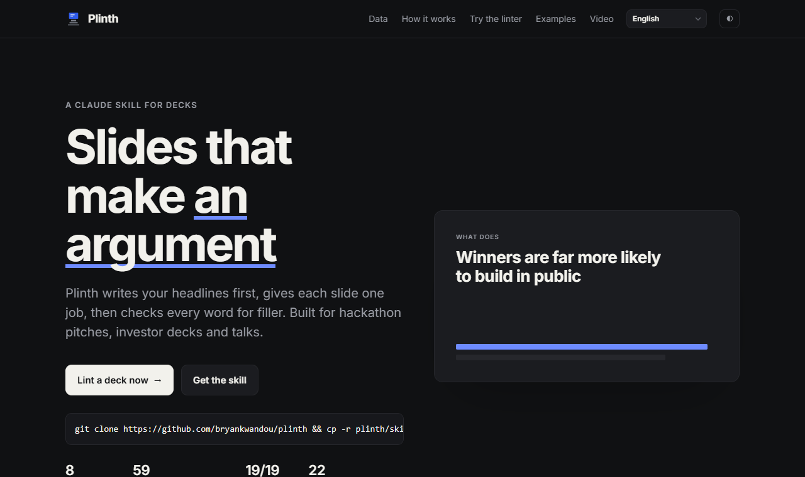

<title>Plinth pitch</title>
<section class="center">
  <div class="fill center">
    <h1>Plinth turns a founder's notes into a deck judges finish watching</h1>
    <p class="lede">A Claude skill for pitch decks and talks · Bryan Kwandou</p>
  </div>
  <aside class="notes">Plinth is a skill for Claude that builds pitch decks and talks. You give it your notes, it gives back a deck with one claim per slide and a lint score for the words.</aside>
</section>
<section>
  <div class="eyebrow">Problem</div>
  <h2>Most AI-made decks look like every other AI-made deck</h2>
  <div class="row">
    <div class="c7"><p>A title, four bullets of equal length, an icon in a circle, a purple gradient. Judges see that pattern dozens of times a day and stop reading.</p></div>
    <div class="c5 frame mono specimen">The Problem<br>- Seamless onboarding<br>- Unlock liquidity<br>- Empower users<br>- Next-gen UX</div>
  </div>
  <aside class="notes">You have seen this slide. Topic label as the title, four buzzwords as bullets. Generated decks drift toward it because it is the average of every deck online.</aside>
</section>
<section>
  <div class="eyebrow">Why it matters</div>
  <h2>One in eighteen projects wins, and every one sends a pitch</h2>
  <div class="row"><div class="c8"><div class="hbars">
    <span class="l">All projects</span><div class="t" style="--b:100;--d:0"><i></i></div><span class="v">5,428</span>
    <span class="l">Winners</span><div class="t hi" style="--b:5.4;--d:1"><i></i></div><span class="v">293</span>
    <span></span><div class="axis"><span>0</span><span>Solana hackathon projects</span><span>5,428</span></div><span></span>
  </div></div>
  <div class="c4"><p>The deck does not get you in; a clear argument inside it does.</p></div></div>
  <p class="source">Source: Colosseum Copilot, pulled 2026-09-25 [P7]</p>
  <aside class="notes">Presence of a deck is universal, so it is not the differentiator. The argument is.</aside>
</section>
<section>
  <div class="eyebrow">Product</div>
  <h2>Headlines first, slides second, lint last</h2>
  <div class="flow rv">
    <div><b>Research</b><span>Sources ledger</span></div><em>→</em>
    <div class="hi"><b>Spine</b><span>Headlines as claims</span></div><em>→</em>
    <div><b>Build</b><span>HTML, notes</span></div><em>→</em>
    <div><b>Lint</b><span>Filler, density</span></div><em>→</em>
    <div><b>Sources</b><span>Every number</span></div><em>→</em>
    <div><b>Layout</b><span>No overflow</span></div><em>→</em>
    <div><b>Export</b><span>PDF, PPTX</span></div>
  </div>
  <aside class="notes">Three steps. The spine is the part people skip, and it is the part that matters most.</aside>
</section>
<section>
  <div class="eyebrow">Demo</div>
  <h2>The linter catches the slide from two minutes ago</h2>
  <div class="row">
    <div class="c6 frame mono specimen">$ node lint-deck.mjs before.txt<br>slide 1 headline "The Problem" is a topic label<br>slide 1 voice "Seamless" is filler<br>slide 1 voice "Unlock" is filler<br>score 58/100</div>
    <div class="c6 frame mono specimen">$ node lint-deck.mjs after.txt<br>no issues<br>score 100/100</div>
  </div>
  <aside class="notes">Same content, rewritten with the rules. The linter runs in the terminal and on the website, using the same code.</aside>
</section>
<section>
  <div class="eyebrow">How it works</div>
  <h2>A skill file, eight references, one template and a zero-dependency linter</h2>
  <table class="t">
    <tr><th>File</th><th>Job</th></tr>
    <tr><td>SKILL.md</td><td>Routes to pitch.md, talk.md or review.md</td></tr>
    <tr><td>references/</td><td>Craft, voice, research, languages, scenarios</td></tr>
    <tr><td>assets/deck-template.html</td><td>Your deck: arrow keys, notes, print to PDF</td></tr>
    <tr class="hi"><td>scripts/lint-core.js</td><td>Same linter in the CLI and the browser</td></tr>
  </table>
  <aside class="notes">Everything is plain files. No server, no account. It runs anywhere Claude Code runs.</aside>
</section>
<section>
  <div class="eyebrow">Traction</div>
  <h2>Nothing yet; this is the first public release</h2>
  <p class="lede">We will count installs and before-and-after lint scores from the first 50 users.</p>
  <aside class="notes">Being honest here. No users yet. The next number on this slide will be real.</aside>
</section>
<section>
  <div class="eyebrow">Ask</div>
  <h2>Try it on your next deck and send us the before score</h2>
  <div class="row"><div class="c8"><p class="cap">Live site: plinthdeck.vercel.app</p></div>
  <div class="c4"><p class="lede">github.com/bryankwandou/plinth</p></div></div>
  <aside class="notes">That is the ask. Run it on a real deck, tell us what it missed.</aside>
</section>
